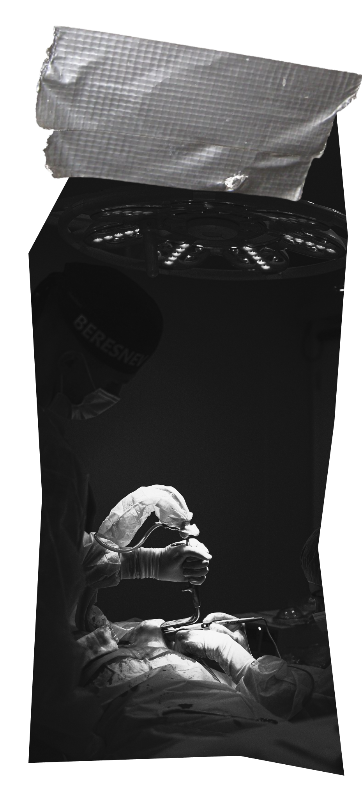

why heliks?

We, humans have came so far from the single cell we started our life as. Everything’s
binary, even today. But we don’t want to know what’s here today, as we are keen to know what could be the
future.
why do you care?
In life of every medical student comes a time where we have to choose between the most
favourite subject
and the 2nd most favourite one. We call this stage as “Post- grad”. But to reach that level, there are
certain number of exams that we doctors have to pass, may it be USMLE for US seats for PG or PLAB for the
UK students.
But how?
How to prepare for an exam this BIG? That’s a scary question we all go through. The
easiest way to start is by reciting and mugging up the basic concepts. But what to do when, makes us less
accountable than we already were. Eventually we lose motivation, and we seek some sort of “appraisal” from
the ones who really understand how hard these exams could be on us.
And that’s why we created Hēliks,
Hēliks has curated all the features for exams like these so that you don’t have to waste
your time preparing mere timetables or finding a study partner combined with the right amount of
motivation, so that you can succeed in life with flying colors.
learn more about our founder, Dr. Yash Jain